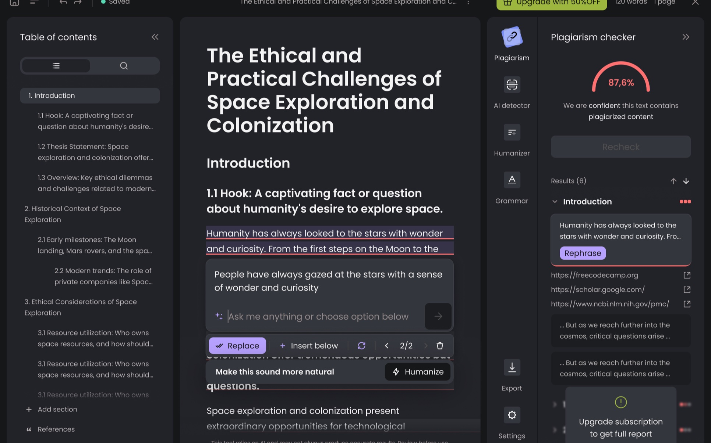
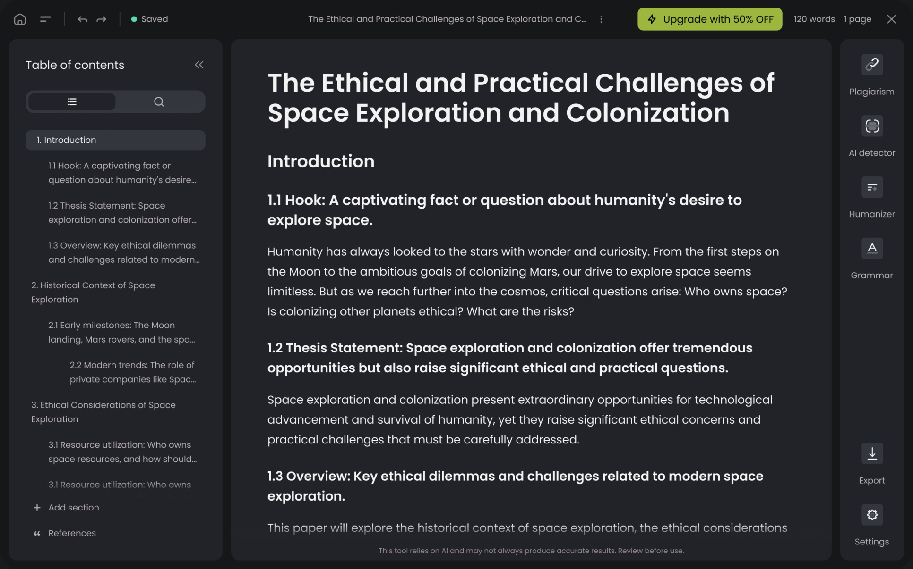
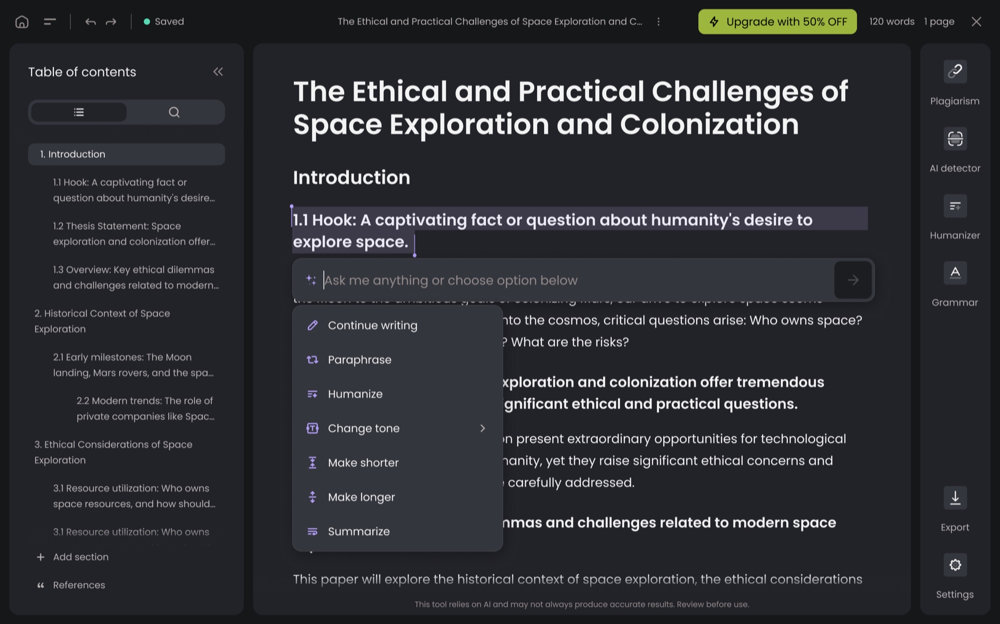
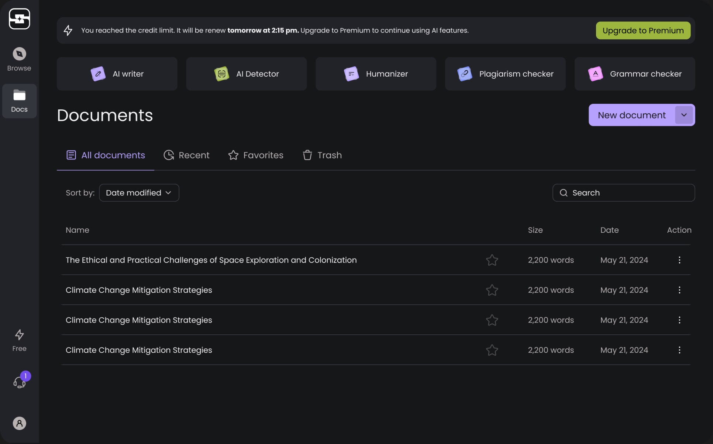
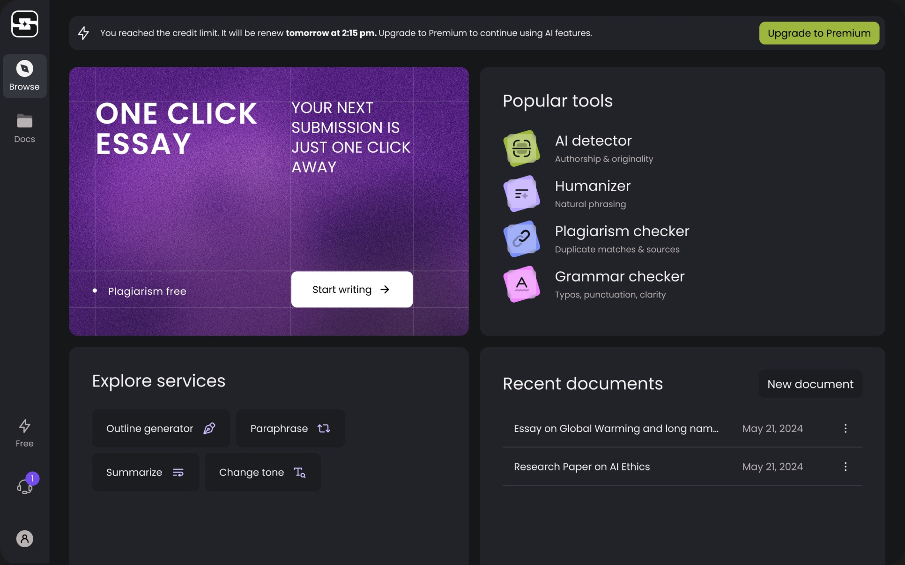

StudyPro is an ecosystem of AI products that helps people in academia stay organized, focused, and confident in their work.
- Scope
- Leading the UX design process 0-1; Problem discovery; Usability testing;
- Position
- Founding Product Designer



I was hired as a founded designer to start designing the startup from 0-1. The big challenge was that the company didn’t have any startup or ML experience, but within one year we could kick off a big project. The product is like smart docs, where users can find a lot of different tools for academic writing, such as outline generation, plagiarism checkers, humanizers, and much more.
My goals were to drive the full design process and beyond to launch the product from 0 to 1, with a strong focus on activation and ‘aha’ moments by educating, simplifying, and guiding users, while prioritizing adoption and long-term engagement. In this product, I led the design from initial concept to final implementation, established clear communication with the dev team and CEO to enable faster and more effective decision-making, and applied the principle of small iterations and rapid prototyping to accelerate progress. I consistently prioritized problem discovery before starting any new feature, followed the guiding principle ‘Simplify, don’t complicate’ to balance speed with quality, and conducted user interviews, translating findings into actionable insights that informed design decisions and improved the overall user experience.

